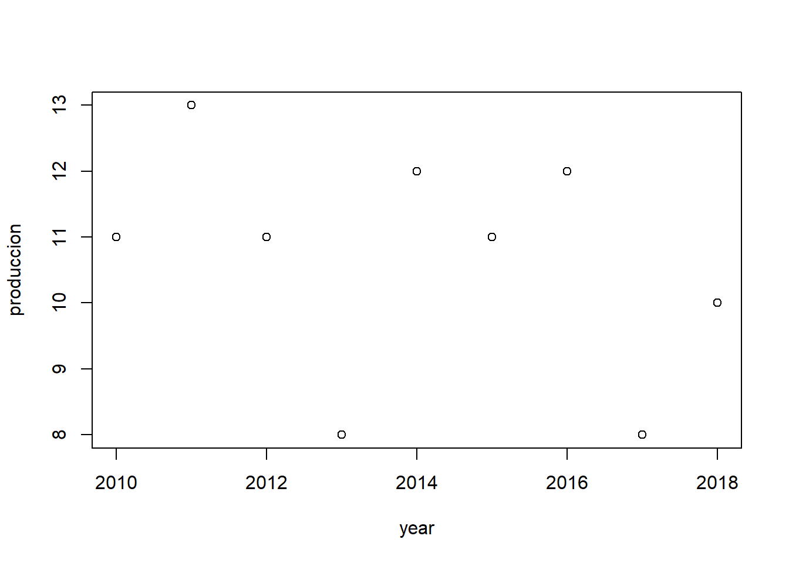
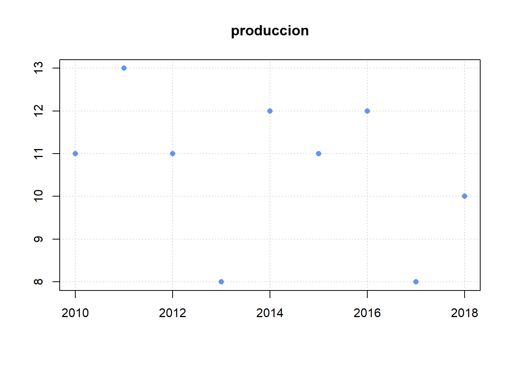

Ejemplo 3 (Implementación de graficas utilizando libreria ggplot2)
#datos de la primera parteyear <-c('2010', '2011', '2012', '2013', '2014', '2015', '2016', '2017', '2018')produccion <-c(11, 13, 11, 8, 12, 11, 12, 8, 10)# graficando con codigoplot(x = year, y = produccion)

# editando la graficaplot(x = year, y = produccion, main ='produccion', xlab ='', ylab ='', col ='cornflowerblue', pch =16, panel.first =grid ())

# Graficas con ggplot2# install.package(ggplot2) # para instalar ggplot2library(ggplot2)# hacer dataframepeliculas <-data.frame(year, produccion)# graficar utilizando ggplotggplot(data = peliculas, mapping =aes(x = year, y = produccion)) +geom_point() +labs(title ='produccion')
Ejemplo 4 (Se utiliza la libreria stringr)
En este ejemplo se utilizara las librerias stringr que tiene la funcion de manipular cadenas: copiar, cambiar caracteres, comparar cadenas, etc.
library(stringr)library(tidyverse)
En esta parte se crea un vector con distintos nombre, luego se agrupa por medio de una coma, para que al momento de la impresion quede ordemadamente y separados por coma.
x <-c ("why", "video", "cross", "extra", "deal", "authority")str_length(x)
[1] 3 5 5 5 4 9
str_c(x, collapse =",")
[1] "why,video,cross,extra,deal,authority"
Aqui se realiza un filtrado de datos en la linea de caracteres que tenemos en el vector X, con la finalidad de, mostrar la primera vocal de cada palabra que encontramos en las palabras mostradas en el vector
str_extract(string = x, pattern ="[aeiou]")
[1] NA "i" "o" "e" "e" "a"
En este proceso se analiza los caracteres asignados en la variable palabra, donde le solicitamos mostrar los caracteres que se encuentran entre la posición 5 hasta la posición 13.
palabra <-"Univesidad de Panama"str_sub(string = palabra, start =5, end =13)
[1] "esidad de"
Asignación 1
Se coloca las librerias que utilizaremos
library(DT)
En esta parte se procede seleccionar el archivo donde se tranajará.
Luego de seleccionar y leer el archivo con nombre lista-empresa.csv, se procede ha selecionar la tabla etiqueta y Link con la función selec que serán donde se trabajará los datos.
En esta parte se procede a crear una variable con nombre hipervinculo, en la misma se acumulará los link y los nombres de cada banco que aparece en Etiquetas.
En este paso se realiza un filtro de las tablas que se desea mostrar, en este caso sería industria, departamentos y la direccion_url que contiene almacenados los hipervinculos con las direcciones web de cada banco.
En este paso se selecciona el archivo que se ejecutara, se procede a seleciconar las columnas que se dividirán y se restructura la tabla en 4 columnas, que seria nombre, edad, provincia y distrito
documento_dividido <- (documento_original %>%separate(Nombre, into =c("Nombre", "Edad"), sep ="[/-]") %>%separate(Dirección, into =c("Provincia", "Distrito"), sep ="-"))documento_dividido
Nombre Edad Provincia Distrito
1 Juan 12 Coclé Penonomé
2 Ana 20 Coclé Natá
3 Pedro 34 Coclé Olá
4 Rosa 5 Coclé Antón
5 Esther 56 Coclé Penonomé
6 Mario 17 Coclé Penonomé
7 Javier 45 Coclé Natá
8 Carlos 23 Coclé Olá
9 Dilia 22 Coclé Antón
10 Indira 15 Coclé Penonomé